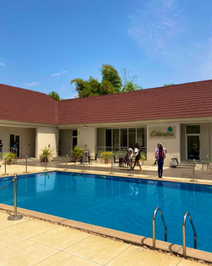

Dive into Nigerian Modern art culture and know the people and places that make it happen
The Kinetixx View
Favourite Gallery In Abuja
MOESHEN ART GALLERY

This Gallery located in Life Camp Abuja will be my favourite in the whole city due to its rare and large colletion of pieces by
Mohamad Khechen who is the founder of this amzing place in life Camp Abuja .
Mohamad Khechenis a Nigerian-Lebanese art collector fond of contemporary African art who took a step further by establishing an art gallery in Abuja.
We have had the pleasure to visit mutiple times and its like your coming into a new building beacause the art works are regulary changed with mutiple
exhibtions from famous artist around the World. It is truly amazing and we can only wish for more establishing of other Art structures like this in the near future.
We saw some works going for 200 dollars and some going for up to 50 Thousand dollars, If your in abuja and ready to visit a gallery please this should
be the very first on your list
Favourite Breakfast Spot
Brunch Club Abuja

Brunch Club Located in Gana street Abuja is our favourite spot for an early meal, yeah the food may take some time to get to you but its all worth it. The layout of the food is just amazing , one of the best we have seen for Nigerian Breakfast which actually properly fills you up. The are afforable well depends on who you are but roughly from 6 thousand upwords. It is a very relaxing setting featuring an outdoor garden like place with little books all around. In general it is a really beatiful place with amazing meal layout , delicious and properly filling so yes we would go with brunch club
A Hidden Germ
Hope Eden Farm

Hope Eden Farm is a Preserved natural environment in Kuje Abuja , We got to find out about this place from AbujaCityTourist now what is really amzing about this place and why we picked it for our hidden germ is the fact that many people dont know of it but Hope Eden Basically you can rent a Hut on there Farm and oh not just a regular hut but a modernized one with a beatiful peaceful bed and secenery which has a night view to live for you just have to see it to understand . The has various rooms depending on your budget and you get to enjoy breakfast with the host who are a lovely German couple with crazy stories and welcoming artitudes. Pricing goes for about 6 thousand a night and you will pay extra for feeding which to me very afforable for its a place to cool your mind from the city life.
Favourite Resort
Zuma Rock Resort
See the reason we love Zuma rock resort its beacause it is so large and the has one of the nicest views ever. Itis the perfect get away if your ever in Abuja with amazing decor and a beatiful outdoor view , once you enter into the resort you will just feel at peace because everthing is in order from the amazing interior decor to the wide trees and wide golf course where deers and birds roam. The also provide bikes and a mini zoo going with a speical someone will be an amazing thing to do.It is located just by the entrance from Abuja to Kaduna ,lokoja axis but its tiil very secure as the have soliders and police officers to defend the property at all times.